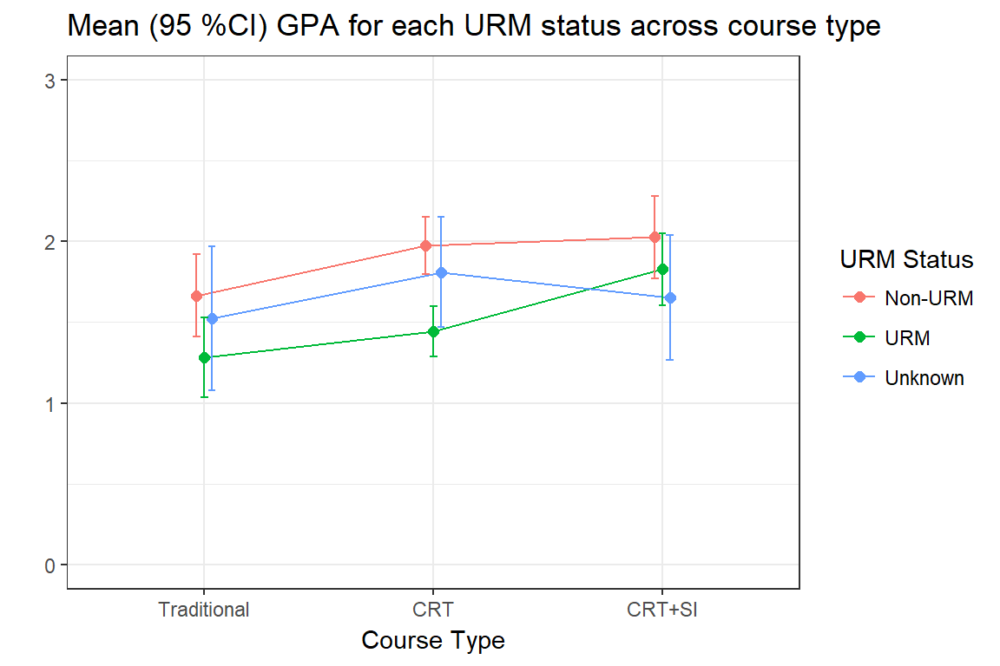

Analysis Overview
To analyze the effect of the course redesign, we consider data from Fall 2014 to Fall 2016, for all sections of Chemistry 111. Students withdrawing or receiving an incomplete (W/I) are excluded from this analysis. A repeatable grade is defined as a student receiving a D, D+, F grade, or an unexcused withdrawal WU.
- Examine bivariate associations between outcome measures, covariates and the CRT intervention condition.
- Student and class level characteristics are used as covariates.
- Each predictor is compared to the intervention condition (CRT vs Traditional), and to the outcomes (GPA and receipt of a repeatable grade.)
- Analysis is done on two sets of data samples:
- All terms (Full sample)
- Just F14 and F16 terms only
- Model building - Start with variables that were shown to be bivariately associated with either intervention or outcome, build a multivariable statistical model to assess the effect of the CRT on student performance.
- Use a supervised machine learning technique to identify other key characteristics highly predictive of a student receiving a repeatable grade.
Outcome measurements
1. GPA
Since GPA is being treated as a continuous variable, distributions of GPA are displayed using boxplots with overlaid violin plots. The diamonds represent the average or mean value for that group. Two-sample T-tests and ANOVA tests are used to compare the average GPA across levels of the covariate of interest.
2. Receipt of a repeatable grade
We also dichotomize the grade a student received and create an indicator for whether or not the student received a repeatable grade. This is also called the failure rate in some places in this report.
Where the sample size is large enough, \(\chi^{2}\) tests for equal proportions across two / and multiple groups are conducted, otherwise Fishers Exact Tests are used. Any comparison where a zero cell occurs (a combination of factors that does not exist in the data), no statistical test is conducted.
Performance Outcomes
We examine four semesters of data from a single instructor. One semester of traditional course offering from F14, two semesters of redesigned courses (F15, S16) and one semester of the redesign with an SI enhancement. These are colored in red, blue and green respectively in most plots.
GPA
The overall distribution of gpa for the crt courses has shifted in the positive direction compared to the traditional courses. The mean for Fall 15 and F16 are higher than F14, with S16 closer to F14 than the other redesigned terms. The variance in GPA from the last semester is much higher than the rest, potentially indicating that the effect of SI did not have a uniform impact on increasing the GPA for all students.
DWF rate
The percent of students receiving a repeatable grade has declined over the past four semesters.
Statistical Comparisons
| Term | Type | Ave. GPA | # DFW | Enrollment | DFW Rate |
|---|---|---|---|---|---|
| F14 | Traditional | 1.53 | 68 | 154 | 0.44 |
| F15 | CRT | 1.78 | 51 | 150 | 0.34 |
| S16 | CRT | 1.65 | 58 | 157 | 0.37 |
| F16 | CRT+SI | 1.89 | 49 | 149 | 0.33 |
- There is a significant improvement in GPA averaged across all redesigned sections compared to traditional (p=0.011).
- There is also a significant improvement in average GPA in F16 compared to F14 (p=0.003).
- The failure rate in F16 is lower than the failure rate in F14, but only marginally so (p=0.093)
- The proportion of repeatable grades does not differ significantly across semesters (p=0.058)
Student Characteristics
Gender
Course Type
Since Fall 14, the gender distribution has become closer to equal, with slightly more females than males since Spring 16. This difference is moderately statistically significant (\(\chi^2_{3}\)=6.5, p=.09).
| gender | F14 | F15 | S16 | F16 |
|---|---|---|---|---|
| F | 66 (42.9%) | 62 (41.3%) | 83 (52.9%) | 77 (51.7%) |
| M | 88 (57.1%) | 88 (58.7%) | 74 (47.1%) | 72 (48.3%) |

Performance - GPA
There is no statistical difference in the average GPA between males and females, regardless of cohort.
| Gender | Mean | SD | p-value | Mean | SD | p-value |
|---|---|---|---|---|---|---|
| F | 1.70 | 0.96 | 0.88 | 1.73 | 1.02 | 0.75 |
| M | 1.71 | 1.10 | 1.69 | 1.08 |


A multiple linear regression model found that the redesign did not have a statistically different impact on males and females.
Performance - DFW rate
There is no difference in proportion of males and females getting a repeatable grade on the entire sample, or when using data on the F14 and F16 cohorts only.
| Course Type | Pass | DFW | Pass | DFW |
|---|---|---|---|---|
| Traditional | 41 (62.1%) | 25 (37.9%) | 45 (51.1%) | 43 (48.9%) |
| CRT | 94 (64.8%) | 51 (35.2%) | 104 (64.2%) | 58 (35.8%) |
| CRT+SI | 51 (66.2%) | 26 (33.8%) | 49 (68.1%) | 23 (31.9%) |

A logistic regression model on the full data indicates that students in the redesigned section (CRT and CRT + SI) have significantly lower odds of failing Chem 111 compared to students in the traditional courses after adjusting for gender.
| OR | CI | p-value | |
|---|---|---|---|
| Gender | 1.119 | (0.8,1.56) | 0.505 |
| CRT | 0.699 | (0.47,1.04) | 0.076 |
| CRT + SI | 0.626 | (0.39,1) | 0.049 |
Summary: The redesign had a positive effect on GPA and DWF rate after controlling for gender, and while it appears as if males improved more than females between Traditional and CRT + SI, the difference is not statistically significant.
Age
Course Type
Students in F14 were on average 0.68 (0.01, 1.34) years older than those in the two CRT semesters (p=.04), and 0.87 (0.1, 1.65) years older than students in Fall 16 (p=.02).

| Traditional | CRT | CRT+SI | |
|---|---|---|---|
| age | 20.72 (3.37) | 20.04 (2.73) | 19.85 (2.55) |
| diff | lwr | upr | p adj | |
|---|---|---|---|---|
| CRT-Traditional | -0.68 | -1.34 | -0.01 | 0.04 |
| CRT+SI-Traditional | -0.87 | -1.65 | -0.10 | 0.02 |
| CRT+SI-CRT | -0.19 | -0.87 | 0.48 | 0.78 |
Performance - GPA
GPA and age appear to have a non-linear relationship. Zooming in on students under 25, the relationship between age and GPA is decreasing until about 20, then increases afterward.

A linear spline model was fit on the full sample using a knot at 20 to allow for a change in slope while controlling for the effect of the course type.
| Estimate | CI | p-value | |
|---|---|---|---|
| Age | -0.090 | (-0.23,0.05) | 0.1951 |
| Over 20 | 0.192 | (-0.01,0.4) | 0.0644 |
| CRT | 0.162 | (-0.05,0.37) | 0.1252 |
| CRT + SI | 0.342 | (0.1,0.58) | 0.0052 |
Under 20, there is a very slight (\(\beta=-0.09\)) and non-significantly different from zero downward trend in GPA as age increases. For each year older than 20 a student is, the average GPA increases by 0.19 (p=.06). Students in the CRT + SI course have on average 0.34 higher GPA compared to students in the traditional class (p=.005).
An interaction term between age and course type was tested but found to be non-significant. This indicates that the intervention has a similar positive effect on a student’s GPA regardless of their age.
Performance - DFW rate
There is no difference in the average age for students receiving a repeatable grade or not, with our without the older students included in the analysis. 
| Repeat Grade | Mean | SD | p-value | Mean | SD | p-value |
|---|---|---|---|---|---|---|
| All Ages | ||||||
| No | 20.23 | 3.13 | 0.44 | 19.73 | 1.55 | 0.59 |
| Yes | 20.06 | 2.39 | 19.66 | 1.39 | ||
| Under 25 | ||||||
| No | 20.33 | 3.30 | 0.79 | 19.72 | 1.61 | 0.82 |
| Yes | 20.24 | 2.54 | 19.68 | 1.46 | ||
| OR | CI | p-value | |
|---|---|---|---|
| Age | 0.970 | (0.91,1.03) | 0.335 |
| CRT | 0.682 | (0.46,1.02) | 0.059 |
| CRT + SI | 0.603 | (0.38,0.96) | 0.035 |
A logistic regression model on the full data across all ages indicates that students in the redesigned section (CRT and CRT + SI) have significantly lower odds of failing Chem 111 compared to students in the traditional courses after adjusting for age.
Summary: The redesign had a positive effect on GPA and DWF rate after controlling for age.
Underrepresented Minority (URM)
The definition used in this report for an underrepresented minority student is as follows:
- Non-URM: Asian, NHOPI, White
- URM: Black, HL
- Unknown: Mult, Unk
Course Type
The proportion of students in each URM category listed above has changed significantly since F14 (\(\chi^2_{6}\)=18.0, p=.006). Most notably is that the proportion of URM students has increased greatly from F14 to S16, becoming about the same proportion (40%) as the non-URM group.
| urm_status | F14 | F15 | S16 | F16 |
|---|---|---|---|---|
| Non-URM | 81 (52.6%) | 70 (46.7%) | 65 (41.4%) | 65 (43.6%) |
| URM | 44 (28.6%) | 63 (42%) | 78 (49.7%) | 60 (40.3%) |
| Unknown | 29 (18.8%) | 17 (11.3%) | 14 (8.9%) | 24 (16.1%) |

Performance - GPA
The distribution of GPA across URM status is similar for the entire sample and when only considering F14 and F16.

When comparing the average GPA across URM status for all four semesters combined, Non URM students have on average 0.39 (95% CI 0.18-0.60, p<.001) higher GPA compared to URM students.
| urm_status | mean | sd |
|---|---|---|
| Non-URM | 1.896085 | 1.0901600 |
| URM | 1.508571 | 0.9174358 |
| Unknown | 1.666667 | 1.0534320 |
| diff | lwr | upr | p adj | |
|---|---|---|---|---|
| URM-Non-URM | -0.39 | -0.60 | -0.18 | 0.00 |
| Unknown-Non-URM | -0.23 | -0.53 | 0.07 | 0.17 |
| Unknown-URM | 0.16 | -0.14 | 0.46 | 0.44 |
Next we examine how the average GPA for students in each URM classification changes with the different redesign models. The plot below shows the mean with 95% CI for each combination of URM status and course type. The confidence intervals are added to this plot to more easily identify which pairs of URM status within course type are different. If the CI bars do not overlap (e.g. Non-URM vs URM in the CRT) this is a significant difference. However, if the bars overlap that does not mean there is no difference. You cannot make a statistical conclusion if the bars overlap.

A multiple linear model of GPA using course type and URM status and the interaction between the two as predictors was run to test for a significant decrease in the gap between URM and non-URM students from each of the two redesigned course types compared to the traditional class. This is called a difference of differences analysis.
| Course Type | GPA gap | CI | p-value |
|---|---|---|---|
| Traditional | -0.38 | (-0.76, -0.01) | 0.0431 |
| CRT | -0.53 | (-0.77, -0.29) | <.0001 |
| CRT+SI | -0.20 | (-0.56 , 0.16) | 0.271 |
The table to the right shows that under the traditional course model the gap in GPA between URM and non URM was 0.38 (with URM being significantly lower), the gap widened to 0.53, with URM still being statistically significantly lower, but under the CRT + SI model of redesign, the gap decreased such that URM students do not have a significantly lower GPA compared to NonURM students.
The decrease from 0.32 to 0.28 however is not statistically significant (p=0.48).
Performance - DFW rate
The failure rate for URM status has decreased as the level of intervention increased from Traditional to CRT to CRT + SI.
| Course Type | Pass | DFW | Pass | DFW | Pass | DFW |
|---|---|---|---|---|---|---|
| Traditional | 51 (63%) | 30 (37%) | 18 (40.9%) | 26 (59.1%) | 17 (58.6%) | 12 (41.4%) |
| CRT | 100 (74.1%) | 35 (25.9%) | 75 (53.2%) | 66 (46.8%) | 23 (74.2%) | 8 (25.8%) |
| CRT+SI | 46 (70.8%) | 19 (29.2%) | 40 (66.7%) | 20 (33.3%) | 14 (58.3%) | 10 (41.7%) |
Summary: The CRT+SI redesign is associated with an improvement in GPA and reduction in DFW rates in URM students.
First Generation
Course Type
The proportion of students that are first generation has remained statistically constant for the past four semesters.
| firstgeneration | F14 | F15 | S16 | F16 |
|---|---|---|---|---|
| N | 83 (53.9%) | 85 (56.7%) | 79 (50.3%) | 81 (54.4%) |
| Y | 71 (46.1%) | 65 (43.3%) | 78 (49.7%) | 68 (45.6%) |
Performance - GPA
When considering the entire four semesters, first generation students have on average 0.29 gpa points lower than non-first generation students. The difference is non-significant when only considering the F14 and F16 cohorts, indicating that these samples are not the same.
| First Generation | Mean | SD | p-value | Mean | SD | p-value |
|---|---|---|---|---|---|---|
| N | 1.84 | 1.03 | 0.00047 | 1.74 | 1.08 | 0.49 |
| Y | 1.55 | 1.01 | 1.66 | 1.02 |

Next we examine the average GPA for first generation and non-first generation students under the different redesign models. The mean profile plot with 95% CI below indicate that just flipping the classroom improves the overall GPA of the class, but primarily for non-first generation students only. However when adding SI to the course model the GPA for the first generation students rises to meet that of the non-first gen. This explains why the difference in average GPA is significantly different when considering the full sample, but not when considering the Traditional and CRT + SI cohorts only.

Performance - DFW rate
The failure rate for each group decreases in a similar pattern to the improvement in GPA.
| Course Type | Pass | DFW | Pass | DFW |
|---|---|---|---|---|
| Traditional | 47 (56.6%) | 36 (43.4%) | 39 (54.9%) | 32 (45.1%) |
| CRT | 120 (73.2%) | 44 (26.8%) | 78 (54.5%) | 65 (45.5%) |
| CRT+SI | 54 (66.7%) | 27 (33.3%) | 46 (67.6%) | 22 (32.4%) |
For both groups the DFW rate went from 43-45% under the traditional course type, to 32-33% under redesign with SI.
Summary: Both the course type and first generation status are associated with a difference in GPA and DFW rate, but the redesign type has different effects for first generation students, specifically the redesign was associated with an improvement in performance for non-first generation students only. Adding on SI to the redesigned class bridged that gap for the first generation students.
Admissions Index (HS Eligibility)
Course Type
There is no significant difference in average admissions index across the three course types.

| Traditional | CRT | CRT+SI | |
|---|---|---|---|
| admission_index | 3.74 (0.37) | 3.73 (0.33) | 3.79 (0.35) |
| diff | lwr | upr | p adj | |
|---|---|---|---|---|
| CRT-Traditional | -0.01 | -0.10 | 0.08 | 0.94 |
| CRT+SI-Traditional | 0.05 | -0.05 | 0.16 | 0.43 |
| CRT+SI-CRT | 0.07 | -0.02 | 0.15 | 0.15 |
Performance - GPA
Admissions index does not have a strictly linear relationship with GPA, and that the relationship differs across the course types. For the Traditional and CRT + SI , there appears to be a flat relationship between HSEI and GPA until about HSEI=3.5, then a positive relationship for HSEI above 3.5.

- The slopes below HSEI < 3.5 do not significantly differ based on course type - this is primarily due to the large standard error of the slope rather than the magnitude of the slope itself.
- The GPA for students in the CRT + SI is moderately (p<.10) larger than the average GPA for students in the traditional classes (0.38, 95% CI -0.07, 0.83)
A linear spline model was fit on the full sample using a knot at 3.5 to allow for a change in slope. No interaction terms were included since there was no significant difference in slope across CRT group.
| Estimate | CI | p-value | |
|---|---|---|---|
| Age | 0.147 | (-0.67,0.96) | 0.7227 |
| HSEI over 3.5 | 1.323 | (0.33,2.31) | 0.0089 |
| CRT | 0.146 | (-0.06,0.35) | 0.1589 |
| CRT + SI | 0.249 | (0.02,0.48) | 0.0369 |
- There no effect of HSEI on GPA when HSEI is below 3.5 (p=.7)
- There is a strong effect of HSEI on GPA when HSEI is above 3.5 (p=.0089)
- After controlling for HSEI there is still a significant improvement in GPA for students in the CRT + SI redesign compared to those in the traditional course.
Course Type - DFW
Students who pass CHEM 111 have on average a 0.2 GPA higher admissions index compared to students who receive a repeatable grade (3.62 vs 3.82, p<.0001).
| Mean | SD | p-value | |
|---|---|---|---|
| Pass | 3.82 | 0.34 | < 0.001 |
| Fail | 3.62 | 0.31 |
| OR | CI | p-value | |
|---|---|---|---|
| HSEI | 0.151 | (0.08,0.27) | <0.001 |
| CRT | 0.731 | (0.46,1.17) | 0.19 |
| CRT + SI | 0.736 | (0.43,1.27) | 0.27 |
Summary:
- After controlling for admissions index, there is no direct effect of the course redesign on the likelihood a student will pass the course.
- There is a positive relationship between admissions index and GPA, but only for a high admissions score.
- The type of course redesign does not significantly change the relationship between admissions index and GPA.
GE Status
Bivariate Summary
Factors unable to be controlled for due to inconsistent data or small sample sizes:
- EOP
- Formal student groups (EOP/Reach/TRIO/DSS)
Demographic factors that were associated with GPA or passing the class
- Age
- Under-represented minority classification
- First Generation status
- Admissions index - but not linearly
Multivariate modeling
Data preparation
Imputing missing values
About 15% of the records in the data were missing admissions index, so for the purpose of machine learning modeling missing values are imputed using predictive mean matching via the MICE (multiple imputation using chained equations) package in R. Only one computed data set is used (instead of multiple) for exploratory purposes only.
Collapsing and grouping varibles.
- The number of college prep math, English, and lab science classes were grouped into more reasonable ranges such as under 6 units, 6 to 8, and over 10. Reference groups are always no units of college prep classes.
- The college in which the student is currently a major of was collapsed into
- Other: BSS, BUS, CME, HFA, UGE
- ECC
- NS: NS and AGR
Restrict on age
Since 95% of the students are below 25 years of age, the multivariable model will be fit on only students less than 25 years of age.
Variable Selection
A Random Forests model is fit to the full data, with all available student and class level information available to the model. This allows the model to consider the effects of secondary, non-demographic variables such as whether or not the student has passed a GE Math class by the time they take Chem 111, the number of units they are currently taking (including Chemistry), and if they participated in high impact practices such as Summer Bridge.
The plot below graphs the % increase in unexplained variance (mean squared error MSE) if that variable were excluded from the model.
- A good model has a low amount of unexplained variance, so a high % increase means that variable plays an important role in predicting GPA.
- For display purposes only those showing an increase of greater than .1% are displayed.
Variables with high importance were then used as a starting point to build a multiple linear regression model to assess the effect of the course redesign after controlling for these other features.
Multivariable Linear Regression
Prior to modeling, a single classification tree was built to determine the optimal location of knots for the known non-linear relationships between GPA, age and admissions index. Spline knots were created at HSEI = 3.8, and Age = 22 and included in the starting linear model.
Further variable selection was conducted via backwards selection, removing the variables that were found to be not significant with GPA with a pvalue > 0.5. Certain demographics of great interest (i.e. First Generation status) were kept in the model regardless of their statistical significance level.
| Estimate | CI | p-value | |
|---|---|---|---|
| Term GPA | 0.877 | (0.81,0.94) | <0.001 |
| HSEI | -0.005 | (-0.28,0.27) | 0.9712 |
| HSEI > 3.8 | 0.723 | (0.2,1.24) | 0.0066 |
| Level: Sophmore | 0.007 | (-0.11,0.13) | 0.9133 |
| Level: Junior | 0.168 | (-0.01,0.35) | 0.0646 |
| Level: Senior | 0.119 | (-0.13,0.37) | 0.3552 |
| CP Math units: [6-8) | 0.704 | (-0.52,1.92) | 0.2576 |
| CP Math units: [8-10) | 0.988 | (-0.22,2.2) | 0.1101 |
| CP Math units: 10+ | 1.008 | (-0.21,2.22) | 0.1033 |
| College: ECC | 0.122 | (-0.02,0.26) | 0.0813 |
| College: Other | -0.228 | (-0.37,-0.09) | 0.0011 |
| Male | 0.295 | (0.18,0.41) | <0.001 |
| GE Math Complete | 0.280 | (-0.01,0.57) | 0.0583 |
| Redesign: CRT | 0.059 | (-0.07,0.19) | 0.3656 |
| Redesign: CRT + SI | 0.191 | (0.04,0.34) | 0.0112 |
| GE English Complete | -0.300 | (-0.59,-0.02) | 0.0391 |
| URM | 0.004 | (-0.12,0.12) | 0.9490 |
| URM-Unknown | 0.079 | (-0.09,0.25) | 0.3496 |
| First Generation | -0.052 | (-0.16,0.06) | 0.3592 |
| Any College prep English | -1.089 | (-2.35,0.17) | 0.0893 |
Summary
After controlling for other significant and demographic characteristics:
- Gender
- URM status
- First generation status
- Admissions index
- Academic level
- College prep English and math classes
- Completion of GE English and Math classes
- Term GPA
Students in the CRT + SI class had significantly higher GPA compared to students in the traditional course (0.18, 95% CI (0.03-0.33), p=.0155).
Notes and Comments
- This model is an additive model, each covariate is modeled as if it modifies GPA in a linear manner.
- This model is simple in that unless interactions between variables are explicitly specified, they are not considered.
- This differs from the supervised learning model such as a Random Forest model, that allows for all variables to interact with each other.
- The effect for all categorical variables represent a change from baseline or reference group, to the group listed.
Next steps
- This analysis only examined courses taught by the same instructor across four semsters to assess the effectiveness of a single individual course redesign.
- SI was only incorporated during the Spring 16 semester.
- A follow-up analysis to examine the impact of SI by attendance should analyze data from multiple instructors for the same semester where SI was available.
- Zero visits for courses where SI is not even available is different than zero visits for a course where SI is available.
- This becomes a difference between opting out of SI, and not even having the option.
This would allow us to examine the following questions:
- Can we show that SI is related to the reduction of the GAP between first gen and/or URM students?
- How does the DFW rate change as a function of SI attendance?
- Do people self-select into SI based on admissions index?